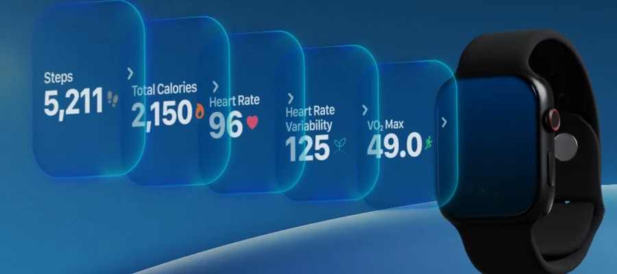
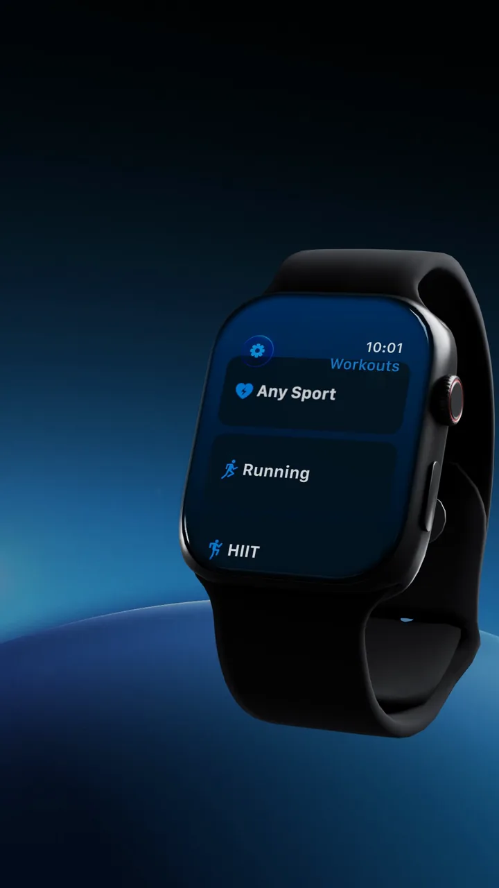
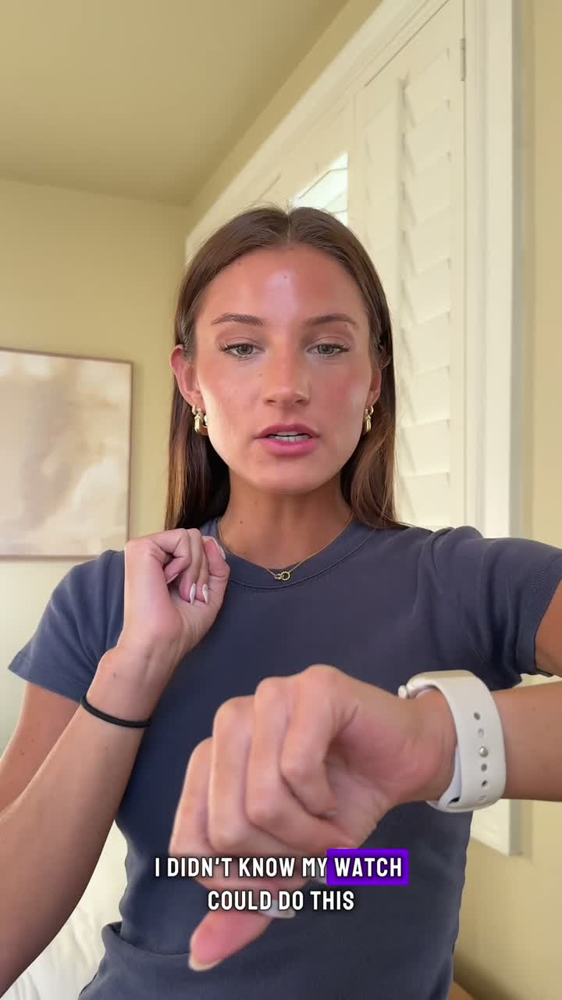

The bar shows its work.
Heart rate, HRV, steps, calories, cardio fitness, breathing and wrist temperature — all of it feeding one number.

Watch it move while you move.
Start any workout and the bar drains in real time — so you can tell a hard session from a hard week.

What people are saying
Nobody can describe it without reaching for a metaphor.
-
It looks like a battery, but this is actually IRL Health Bar… it sums up all your health metrics into one simple bar.
AppleWatchDave -
Most fitness apps show you more data. What most runners actually need is more clarity. Think of it like a fuel gauge for your body.
Siya -
Your health data turned into one glanceable bar — like a health bar in a game.
Draftish -
As y'all can hear, this app is very accessible for the visually impaired community.
POLO

30 seconds — see it on a real wrist
Helped me easily see where my body is at while running.
App Store review · ★★★★★
Simplify your health.
Free · No subscription · No account · Works without your iPhone